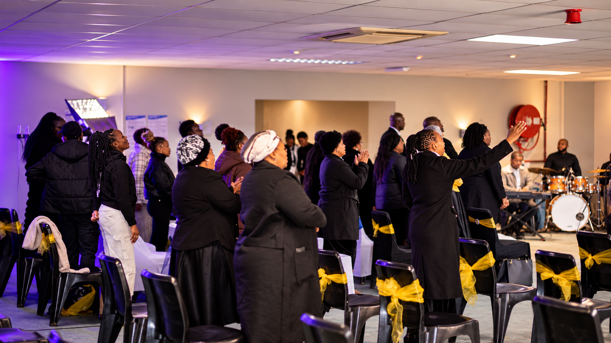

Sunday · 9:00–10:00 AM
Youth Service
Join us for Sunday youth service and fellowship.

Welcome to For His Grace Ministries
A welcoming church in Ratanda, growing together in faith and sharing the love of Christ.
Discover Our Story
Restoration · Faith · Service · Hope
Founded by Apostle Nathi Khumalo in 2021, For His Grace Ministries serves Ratanda with a heart for restoration. We want those who feel lost or wounded to find their way back to Christ, and we support people in need through community outreach.
You are welcome here
Join us for worship, intercession and time in the Word. Whether you are visiting for the first time or looking for a church home, there is a place for you.
Sunday · 9:00–10:00 AM
Join us for Sunday youth service and fellowship.
Sunday · 10:00–10:30 AM
Begin the day together in prayer for our families, church and community.
Sunday · 10:30 AM–12:30 PM
Gather for worship, biblical teaching and fellowship.
Wednesday · 6:00–6:30 PM
Join us for Wednesday prayer on WhatsApp.
4468 Luvuyo Street, Ratanda EX 23
Those who serve
Our pastors and ministry leaders serve the congregation through biblical guidance, prayer and pastoral care. Senior Pastor Khumalo, Pastor Mofokeng, Overseer Nomsa Khumalo and Deacon Zuma are among the leaders serving the church.
Share a prayer request or arrange a confidential pastoral conversation.
Connect with usFind fellowship and a welcoming community as you grow in faith.
Explore the galleryYour generosity helps sustain worship, teaching and compassionate service in Ratanda.
View giving detailsTestimonies
Witness how God's grace continues to rebuild hearts and establish foundations.
“In 2021, this church began with faith, prayer and obedience. Today, For His Grace Ministries stands as living proof that God builds what He starts.”
As Psalm 127:1 states: “Unless the Lord builds a house, the work of the builders is wasted.” This scripture reminds me that the foundation of this church has never been our own strength, but the grace, guidance and faithfulness of God. What began as an act of faith has become a testimony of His goodness.
Being part of this church has taught me that a church is more than being in a garage as a starting point or a Sunday gathering. It is a family, a place of growth, service, learning and fellowship. Like every journey, ours has had its joys and its challenges, but through it all, we have continued to be reminded of the importance of keeping God at the centre of everything we do.
Our mission is not just simply a collection of words; it reflects the foundation upon which we desire to build. Jesus is our centre, prayer is our priority and scripture is our authority. Worship is our passion, people are our reason and community is our heart. Honour is our way, excellence is our standard, serving is our privilege and generosity is our norm. These are the values that constantly remind us of who we are called to be, both within the church and beyond its walls.
“One way, one heart. One heart, one way.” These words remind me of the unity we are called to pursue as we walk together in faith, with one purpose and our eyes fixed on Christ.
My heart is filled with gratitude for what God has done for us, for the people He has placed along this journey and for the opportunity to be part of a church that continues to strengthen my faith and growth. I am grateful for the lessons learned, the opportunities to serve and the reminder that our walk with God is one of continual growth.
With constant new beginnings, this goes to show that this is not the end of our story. We are looking forward with faith, trusting the God who brought us this far to continue leading us in the years ahead. May we never lose sight of our foundation, our purpose or the one to whom all the glory belongs.
“When our church started, I was 14 years old. I was exploring churches, but little did I know I was approaching my final stop. Eventually, I became a member, and this church became a family to me.”
When our church started, I was 14 years old. At that time, I was young, and honestly, I was Dora the Explorer when it came to churches! I was exploring this church, then another church, and then another. Luckily, I received an invitation from one of my fellow youth members to come to this church. Little did I know that I was actually approaching my final stop as Dora the Explorer. Eventually, I became a member, and this church became a family to me.
One thing I appreciate about our church is that it is filled with young people. There are more young people than older people, and I believe this gives us an opportunity to learn from one another and see life from a more beautiful perspective. As teenagers, we are at a stage where we are still learning about life, discovering ourselves and figuring out the people we want to become.
Being part of this church has also contributed to my spiritual growth. Through the teachings and the Word of God, I have continued to learn more about Him and the importance of growing in my relationship with Him. I am grateful for the lessons I have received, the guidance I have found and the opportunity to grow in my faith while growing up.
Jeremiah 29:11 reminds us that God knows the plans He has for us, plans to give us hope and a future. This verse reminds me that even as young people, we may not always know what the future holds, but we can trust God to guide us according to His purpose.
I thank God for this church, for the lives it has touched and for allowing me to be part of this family. May God continue to strengthen our church, guide our youth and help us grow in faith and purpose.
Thank you. ❤️🙏